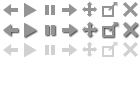
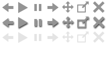

概要
私達、看護部職員は、恵信甲府病院の基本理念である「安全」｢親切｣「信頼」“チームで取り組む療養支援”を基本として、患者様一人ひとりを尊重し、安全で安心な療養生活が送れるよう、心をこめた看護・介護を行っています。また患者様の治療方針に沿って、他部門と連携を取りながら、1日も早い回復を目指しています。慢性期療養型病院は、ご高齢な方が多く入院しています。「その方の生きてきたキャリアや生き方を尊重する」ことを、常に心に留めて看護・介護に努めています。
看護部全体が共に学び、支えあい、成長できるよう、研修参加やキャリアアップを支援しています。
患者様の尊厳を大切にし、一人ひとりに合った看護・介護を実践します
Copyright (C) 2007 Keishinkai. ALL Rights Reserved.
見出し抽出
- 看護部から
- 看護部の理念
- 看護部の目標
- 親切で優しい療養支援を提供します
- 看護体制
- 看護部会議･委員会
表データ
| 看護提供体制 | ２０：１ 入院基本料 | |
| 勤務体制 | ２交代制 | 日勤 ８：３０〜１７：３０（休憩１時間） 夜勤 １６：３０〜翌朝９：３０（休憩１時間） |
既存バナー画像（流用）


